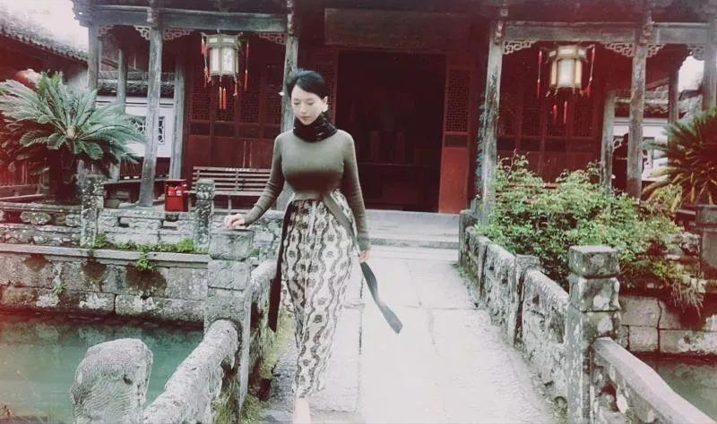

1. 我所居住的嵊州
我居住的城市是嵊州。它是一座山城,风景优美，而我也是最近才慢慢喜欢上它。
嵊州，嵊州市位于浙江省绍兴市，古称剡县。
它以"百年越剧诞生地、千年剡溪唐诗路、万年文化小黄山"，而闻名于世。这里诞生了山水诗人谢灵运，也曾是王羲之的晚年隐居之地，还是北京大学著名学者马寅初先生的家乡。
它还是胡兰成故乡,有厚重的古镇,有美丽的温泉湖,也有静谧树林。
春有百花绽,夏有星月挂,秋有飞叶飘,冬有白雪落。一年四季风景如画。 春花，秋叶，夏月，冬雪，一路风景迤逦。
哪怕是冬日,这儿依旧是色彩斑斓。 你在北方的艳阳里大雪纷飞，我在南方的暖阳里瑰丽如梦。
我最喜欢落叶了,红的,黄的,美得动人,仿佛日子也被它映染得缤纷。
2. 山水裡的嵊州
“湖月照我影，送我至剡溪”。
“此行不为鲈鱼脍，自爱名山入剡中”。
李白杜甫都曾入此城。他们为嵊州留下了经典诗篇。
许许多多文人墨客纷至沓来。
山山水水,令人流连忘返。
一座城市，若少了历史文化，终究是无魂的城。城市的美少不了文化的支撑。那是城市的主旨和风骨。
嵊州的美是有灵魂的。一座座上古建筑，一位位赫赫历史人物撑起了这座独一无二的城。
嵊州贵门古村，一座海拔350米的高山村落：它文化底蕴深厚，风光清秀，俨然一座世外桃源。
这儿，有一座书院，叫鹿门书院。900多年前，宋代朱熹、吕祖谦曾在此讲学，朱熹曾来此讲学，并将鹿门改称为“贵门”。
胡兰成也出生在嵊州。他是三界镇胡村人，在覆卮山余脉。晚年，他回忆述说百年前的胡村风情：
“门前一条石弹大路，里通覆卮山群村到奉化，外通三界章镇到绍兴，田畈并不宽，但人家迤逦散开，就见得平旷阳气。”
而另一座古村,高高的马头墙下，流淌着缕缕笔墨清香，静谧悠远。它是王義之曾所居之地,华堂古村。华堂古村位于嵊州市东部的金庭镇，古村四周"千岩竞秀，万壑争流"，藏龙卧虎之地，佳境叠现，气象万千。
东晋永和十一年（公元355年），书圣王羲之慕金庭山水之胜，带妻携子来此隐居，六年后谢世，建茔于瀑布山南麓。书圣后裔世居金庭华堂，聚族而居，绵延1700年，遂成胜景。

这是一座令人神往的一座城。
它有小西湖。（摄影：谢南华）

亮眼红杉林 摄影：谢南华
3. 古鎮古村裡的嵊州
嵊州最美的还是它的古镇古村。
青砖黛瓦，雕花的木格门窗。精美绝伦的雕刻，悠悠的古街，掩不住漫漫的沧桑。
你可以，在一个阴雨绵绵日子，走上那幽幽长长的古弄。
雨霏霏微微落下来，一片片的，如烟如雾雨丝，串起那一道道思绪，诉说着一个个不老的传说。
诗情画意,亭桥留意。一切的喧嚣淹于这儿，抹平了最深心底的起伏。
嵊州，有许多古镇古村，当然，最数有名的还是崇仁古镇。
你可以去崇仁的街头走一走，可以去尝一尝那刚刚烤好的豆腐馒头。
你可以伫足留步,阡陌巷深：
那走过的每一条古巷,那一面面墙,也许唤醒了心中潜隐着的一丝丝浓厚的乡愁。
那儿的小弄里，也有许许多多的手艺人：
幽幽古镇下,悠悠不散的古老手艺人,他们一年又一年，在日以继日地默默执守。
4. 越劇裡的嵊州
嵊州，也在一声声婉转幽扬的越剧声中源远流长。它是越剧的故乡。
嵊州，是一曲脍炙人口的越剧。
不如在一个下午，走进小镇，听一曲越剧罢。这儿的人好多会哼上几句越剧。
而在小学里，在音乐课堂上，小朋友们会像模像样地唱上一曲《十八相送》，《我家有个小九妹》。
5. 小吃裡的嵊州
嵊州，也回味在那一道道让人念念不忘的小吃……
一笼笼热气腾腾小笼包。一个个油香扑鼻的油肫鼓。又或一片片甜而不腻的三界印糕。还有榨面,糟鸡,糟肉,笋干鸭等等。
而嵊州小笼包，驰名万里。这里的小笼，还曾被美国有线电视新闻（CNN）旗下的旅游网CNNGo，评选为全球20种最美味食物，排名第一。
我的读者对我说，过年了，想来嵊州玩玩。我说，春节并不是一个旅行好时候。
因为，那时候，你吃不到那美味的街头小吃。而小吃，应是旅行的一个重要内容。没了小吃,旅行逊了色,失了生趣。
你真的可以去吃吃黄泽街头的豆腐包；也可以去品尝一碗正宗的嵊州炒年糕；也可以与三四知己，煮上一壶高山好茶，让时光悠悠荡在这片片茶叶之中……
什么是嵊州啊
是一座座山，一湾湾水
一帧帧别具一格的风景
是逛不够的古街，听不腻的越剧
是根雕，是竹编，是……
雕不完的里里外外，编不尽的曲曲折折
是桂花满枝，四处飘香的嵊州
是秋枫亮眼，频频而曳的嵊州
是冬红杉，是金银杏,是……
是陈氏炖鸭肥美无虞
是葱香小笼包香味四溢
一生倾爱是嵊州
请你在来日，来一次嵊州吧……